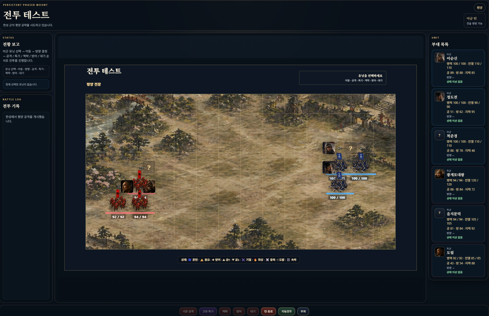
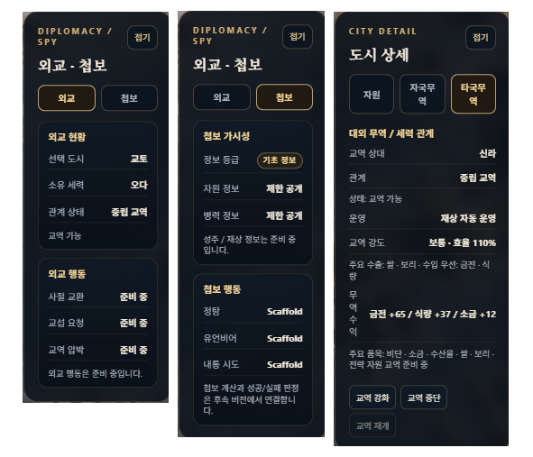

세계가 살아났다
군대, 무역, 외교가 한 게임에 들어오다
2026년 5월 13일 — 5월 15일3일이 만든 것
어떤 개발 기간은 느리게 흐르고, 어떤 기간은 뒤돌아보면 믿기지 않을 만큼 많은 것이 바뀌어 있다. 5월 13일부터 15일까지가 그랬다. 군대가 분리됐고, 보급망이 연결됐고, 무역이 시작됐고, 세계 지도가 13개 도시로 펼쳐졌다. 그리고 전쟁의 무대가 조선·중원·왜열도를 넘어 몽골 초원까지 이어졌다.
한 줄로 요약하기 어려운 3일이었다. 그래서 순서대로 쓰기로 했다.
군대를 세 가지로 쪼갰다
v0.5-4 ~ v0.5-4c — 2026.05.13이전까지 EASTWAR에서 '병력'은 하나였다. 영웅이 들고 다니는 숫자. 그게 전투도 하고, 치안도 담당하고, 도시를 지키고, 유지비도 먹었다. 한 통에 다 담겨 있던 구조다.
이걸 이제 세 가지로 나눴다.
첫째, 영웅 병력이다. 영웅이 직접 이끌고 전장에 나가는 전투용 부대다. 둘째, 도시 주둔군이다. 도시에 상시 배치돼 치안을 유지하고 외적 방어를 담당한다. 셋째, 징병 가능 병력이다. 아직 군복 입지 않은, 모집 대기 중인 인구다.
이 세 가지를 분리하는 일은 코드 몇 줄로 끝나는 작업이 아니었다. 도시 인구와 주둔군 비율 계산, 군사 과밀 패널티, 유지비 breakdown까지 전부 새로 설계해야 했다. 모집비율이 전체 인구의 50%를 넘으면 다음 턴 충성도에 불이익이 생기는 것도 이때 들어왔다.
군대가 드디어 '숫자' 하나가 아니라 '구조'가 됐다.
영웅이 병사를 직접 데려간다
v0.5-5 ~ v0.5-5b — 2026.05.13병력을 세 가지로 나눴으면, 다음은 그 병력을 어떻게 쓸 것인가의 문제다.
영웅에게는 이제 직위에 따라 이끌 수 있는 병력의 한도가 생겼다. 태수는 1만, 장군은 8천, 부장은 6천, 군관은 5천. 전투에 나갈 때 도시 주둔군에서 영웅별로 병력을 배분받아 출전한다.
전투가 끝난 뒤 처리 방식도 실제처럼 됐다. 이겼을 때는 생존 병사가 복귀하고, 전사자의 30%는 부상병으로 처리된다. 졌을 때는 출전병의 절반이 부상병이 된다. 부상병은 3턴이 지나면 회복해 다시 주둔군으로 돌아온다.
전투 하나에도 이제 문서 한 장이 필요해졌다.
낙양세력, 한성세력, 교토세력 — 세력이 이름을 얻었다
v0.5-6 — 2026.05.13기존 EASTWAR에는 사실 '세력'이라는 개념이 제대로 없었다. 플레이어와 적. 이게 전부였다.
이제 각 집단이 고유한 id를 가진 세력이 됐다. 낙양세력, 한성세력, 평양세력, 교토세력. 적군에게도 재상과 태수가 생겼다. 기존에는 플레이어만 관료를 임명할 수 있었다.
이 변화는 무역 시스템과 멀티 점령 구현을 위해서도 반드시 필요한 기반이었다. 겉으로는 이름 붙이기처럼 보이지만, 사실 이 게임이 '전략 게임'으로 가는 핵심 뼈대를 세운 날이다.
같은 편끼리 먼저 연결했다
v0.5-7 ~ v0.5-7c — 2026.05.14하루가 지나고 무역 시스템이 들어오는 날이 됐다. 그런데 처음부터 외부 무역을 만들지 않았다. 같은 세력 안에서의 내부 보급망부터 시작했다.
개념은 간단하다. 한성은 후방이고, 평양은 국경이다. 한성 병력이 넉넉하고, 평양 병력이 부족하다면 — 자동으로 판단해 지원한다.
v0.5-7은 그 판단을 하는 단계였다. 도시 역할(후방·국경·최전선)을 구분하고, 병력 부족과 잉여를 계산하고, 지원 필요 여부를 화면에 표시하는 것까지. 그런데 판단만 하고 아직 움직이지는 않았다.
v0.5-7c에서 실제로 병사가 이동하기 시작했다. 잉여 병력이 부족한 도시로 흘러간다. 도시 최소 주둔군 이하로는 내보내지 않는다. 한 턴 이동량에 제한을 둔다. 이 세 가지 규칙 안에서 세력 내부의 보급이 자동으로 돌아가게 됐다.
이번엔 다른 세력과 거래한다
v0.5-8 ~ v0.5-8c — 2026.05.14내부 보급망이 완성되면 자연스럽게 다음 질문이 생긴다. 그러면 다른 세력과는 어떻게 거래하나?
대외 무역에는 한 가지 중요한 규칙이 생겼다. 전투가 발생한 두 세력은 10턴 동안 거래를 하지 못한다. 전쟁 중인 나라와 장사하지 않는다 — 당연한 이치인데, 코드로 구현하니 더 실감이 났다. 쿨다운이 끝나면 중립 상태로 복구되고 무역이 재개된다.
무엇을 얼마나 거래할 것인지도 이어서 구현했다. 재상이 있으면 자동으로 최적 교역을 운영하고, 태수는 제한된 범위에서 운영하며, 플레이어가 직접 개입할 수도 있다. 금전·식량·소금·특산물이 세력들 사이를 실제로 흘러다니기 시작했다.
도시가 4개에서 13개로 늘었다
v0.5-8e ~ v0.5-8k — 2026.05.14 ~ 15구조가 잡히면 확장은 빠르다. 도시가 4개에서 10개로, 영웅이 8명에서 27명으로 늘었다. 세력이 10개로 구성됐다. 한반도엔 백제가 들어왔다. 의자왕, 계백, 흑치상지. 일본 서남부엔 큐슈 세력이 생겼다. 시마즈 요시히로와 고니시 유키나가.
5월 15일엔 몽골 초원까지 이어졌다. 카라코룸이 월드맵에 올라왔다. 이제 게임의 무대는 한반도, 중원, 왜열도, 몽골을 아우르는 동아시아 전체가 됐다.
월드맵 위 도시 좌표 작업도 이때 제대로 잡혔다. 퍼센트 기반 좌표 시스템을 도입해서 어떤 해상도에서도 성이 같은 위치에 표시되게 했다. 2K 모니터에서 맞춘 좌표가 다른 사람 화면에서 엉뚱한 곳을 가리키는 문제를 근본부터 해결한 것이다.
전장이 선명해졌다
v0.5-9 ~ v0.5-9c — 2026.05.15전투 화면이 Phaser.js 기반에서 DOM 방식으로 전환됐다. 이유는 단순하다. 선명도. 기존 Phaser 렌더링은 폰트와 숫자가 뭉개져 보이는 문제가 있었다. DOM으로 전환하면서 전투 화면의 텍스트와 수치가 훨씬 깔끔해졌다.

유닛 이동도 부드러워졌다. 이동 명령을 내리면 부대가 tween 애니메이션으로 자연스럽게 미끄러진다. 전투 진입 시 화면이 번쩍이며 갑자기 나타나던 문제도 해결됐다. 전장 배경, 영웅 얼굴, 병력 라벨이 한 덩어리로 부드럽게 등장한다.
아군과 적군이 서로 마주보게 됐고, 방향 표시가 유닛 가까이 붙었다. 전투 화면이 처음으로 '게임처럼' 보이기 시작한 날이었다.
외교와 첩보가 들어왔다
v0.5-10 — 2026.05.15마지막으로 외교와 첩보 시스템의 뼈대가 들어왔다. 아직 전면 구현은 아니다. 세력 관계를 관리하고, 첩보 행동을 정의하는 scaffold — 즉 앞으로 살을 붙일 빈 뼈대. 하지만 이 뼈대가 있어야 이후 외교 협상, AI 반응, 조약 같은 기능들을 하나씩 걸어둘 수 있다.

3일간의 작업을 마치면서 느낀 건 하나였다. 이 게임이 처음으로 '전략 게임'처럼 보이기 시작했다는 것. 전투만 있던 게임에 경영이 생기고, 외교가 생기고, 무역이 생겼다. 동아시아 역사 속 인물들이 이제 진짜 세계 위에서 움직이고 있다.